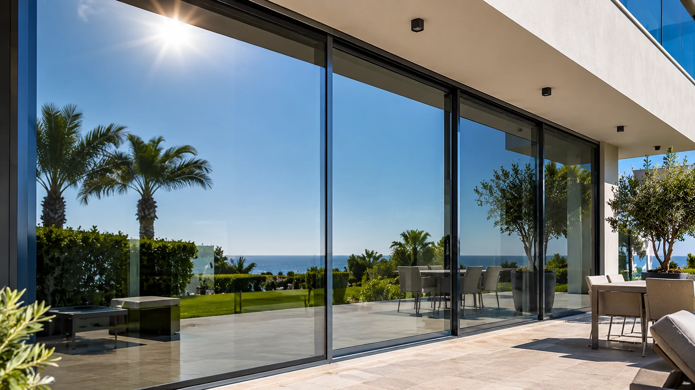

01 / MIRROR SOLAR FILM
Зеркальные солнцезащитные плёнки
Зеркальные плёнки помогают уменьшить воздействие солнечного тепла и создать дополнительную приватность в дневное время. Подходят для окон домов и вилл, панорамного остекления, офисов и коммерческих помещений. Отражающий эффект зависит от разницы освещённости снаружи и внутри; ночью при включённом освещении приватность может снижаться.